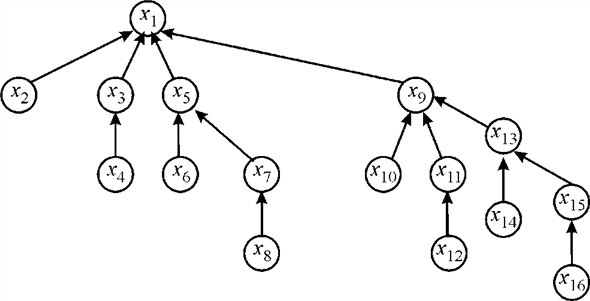
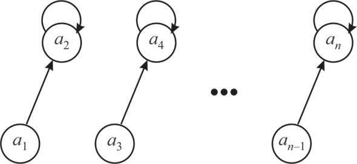
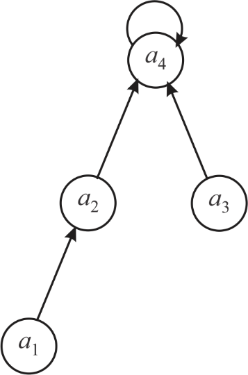

Disjoint-set forest is a type of data structure in which, a tree data structure is used for the representation of each set. Here, a reference to the parent node is held by each node. Each set is represented by its root tree.
Now, the code block (refer to the textbook, exercise 21.2-2) would be executes as below:
• The for loop would run 16 times making 16 different sets. The sets are as shown below:
• Now, second for loop would run from 1 to 15 and every time the increment would be done by 2. This would make the loop run 7 times. Each time, inside the loop, the union operation would be performed on two consecutive sets. This would yield the following result:
• The third for loop would run from 1 to 13, and every time the loop variable would be incremented by 4. This would make the loop run only 4 times. This would yield the following result:
• Now, the UNION would be applied on  and
.
This would yield the following result:
and
.
This would yield the following result:
• The above statement would UNION the set and . Since the rank of is more than, would be appended to. This would save the running time of the instruction. The yield would be as shown below:
• The statement would append x10 to x1 as shown below:
The structure of the x1 set would be like below:

So, the tree representation will remain same as it was obtained before FIND-SET function.
Therefore, the FIND-SET operation of  and are
returns to pointer .
The tree is not changed by FIND-SET ( )
and FIND-SET (
).
and are
returns to pointer .
The tree is not changed by FIND-SET ( )
and FIND-SET (
).
Procedure for non-recursive version of FIND-SET with path compression using disjoint-sets is:
FIND-SET(x)
1. top =0; Initialize an empty stack top
2. z x
3. While //finding the root
4. PUSH(top, z)
5. z parent[z]
6. While top 0
7. yPOP(top)
8. p[y] z
9. return z
This algorithm uses a stack top to store the nodes on the path from a given element x to the root.
This algorithm finds the root z and sets the parent pointers to all nodes in top to z.
Union by rank:
It is a heuristic approach in which two trees are merging on the basis of their rank. The tree which has the larger root node becomes root node after merging.
Consider the MAKE-SET(), UNION() and FIND-SET() procedure provided in section 21.3.
Suppose there are n elements on which m operation are performed through MAKE-SET(), UNION() and FIND-SET() procedures.
At first call MAKE-SET() procedure with n elements to create n sets, each having only one element. The sets after n MAKE-SET() procedure are as follows:
Now, call UNION() procedure to create set of size 2 or a tree having 2 nodes. Therefore UNION() procedure get called:
Consider the following diagram to show a tree having 2 nodes:

Now, again call UNION() procedure to create set of size 4 or a tree having 4 nodes.
So, UNION() procedure is called:
Consider the following diagram to show a tree having 4 nodes:

Similarly, the UNION() procedure will goes on till there are one two set contain elements each. Then again UNION() procedure get called only once to create a set of n elements or a tree having n nodes.
This result gives a binomial tree which has nodes at ith level and has height.
Total Cost:
• The MAKE-SET() procedure is called n time so its cost
becomes  .
.
• The UNION() procedure merge the two elements which is called n-1 times. Therefore its cost .
• The total cost of MAKE-SET() and UNION() procedure becomes .
• The height (or rank) of root node is. Therefore the cost of remaining FIND-SET() will be .
• Suppose , so. Therefore the FIND-SET() procedure cost becomes .
Hence, the total cost all procedure becomes .
Linear time in Operation PRINT-SET(x)
According to path-compression heuristic technique, sequence of m MAKE-SET, FIND-SET, and PRINT-SET operations is there. Here, all the PRINT operations will be performed before execution of FIND-SET operations, this takesrunning time. Here, a node x appears on an end path, x will be either root or child of a root at all times thereafter.
Analyzing that asymptotic running times are changed or not:
An array has been maintained by every node of the tree having points of its children. The operation works on Depth First Search (DFS) taking x as the starting node. As the nodes are connected with each other, either in form of its parent or child, all the nodes are connected with each other. On the basis of this, all the nodes are visited while performing DFS. The DFS also prints whenever it visits any node.
For operation, a circular singly linked list having set of nodes has been maintained. This operation will be followed until the control moves to node x and printing of all the members of list will be there. Consider a graph having vertices V and edges E, the time taken by DFS will be .Taking number of vertices as A, where, the number of edges will be. It is because the graph is in form of tree. So, total time required will be.
This operation will not affect on the FIND and UNION operations. The execution time of both of them will remain same. The execution time of FIND operation will not be changed because there are changes in the pointers and not in the tree. Taking the UNION operation, root of tree has been made as internal node of the tree. While performing this operation, the pointer is set representing leaves of another tree. After this, the newly built child pointer is set as leaf of the tree’s old root. The time requirement of the operation is always. So, the time required for the execution of UNION operation will be same.
The time taken by MAKE-SET and LINK operations is O (1). If there are n FIND-SET operations that occur then it is required to show that all FIND-SET operations take O(n) time. To show this, amortize the cost of FIND-SET operations into the cost of MAKE-SET operations. If there are n LINK operations, the time taken is O(n) and n-1 tree edges are created. The time taken by m FIND-SET operations is not more than O(m+n).
While performing the FIND-SET(x) operations, there are three possibilities. The first possibility that can occur is when x is the representative of its own set and in that case, it takes only constant time. The second possibility occurs when the path from x to the set representative is compressed already, so a single step is taken to find the set representative. The time in this case is O(1).
The third possibility is that x is not the representative and the path is not compressed. If there are k nodes, then the time of the find-set operation is O(k) but the extra amount is used that is being utilized in the MAKE-SET operations for k nodes which have compressed paths.
If any further call is made to find the set for the nodes, it will take O(1) time.